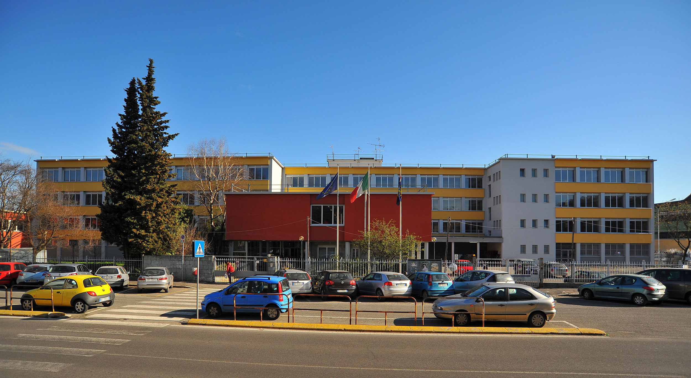

Un Nuovo Capitolo
Capolavoro Unica
Benvenuti! In questa pagina racconto un'esperienza che non ha segnato solo il mio anno scolastico, ma la mia vita: il trasferimento.
Sono nato e cresciuto a Palermo È luogo d'origine della lingua e della letteratura siciliana, oltre che di una rinomata tradizione culinaria. È depositaria di alcune delle più importanti e famose tradizioni artistiche dell'isola, come l'Opera dei Pupi e il Carretto siciliano. Molto noti sono anche i mercati storici di Ballarò, Vucciria e Capo. insieme alla famiglia e agli amici. È qui che ho sempre frequentato la scuola, coltivando amicizie e passioni che mi hanno sempre accompagnato. Ma quest'anno le cose cambiano: vado a vivere dall'altra parte dell'Italia, a Monza.
Prime impressioni e sensazioni
Ero entusiasta del cambiamento e sapevo che molte cose sarebbero state diverse. Ero ansioso di scoprire la mia nuova scuola, di esplorare gli spazi, di conoscere gli insegnanti e soprattutto i nuovi compagni di classe. Immaginavo i volti, i corridoi, le aule, le prime conversazioni. Il primo giorno di scuola parve non arrivare mai. Le ore che mi separavano da quel momento sembravano dilatarsi all'infinito. Quando finalmente arrivò quel giorno, mi sentii pronto, con la speranza che quello fosse solo l'inizio di qualcosa di bello e significativo
Difficoltà
Le difficoltà non mancarono: nuove abitudini, conoscenze e luoghi. Dovetti adattarmi, conoscere la nuova città, la nuova scuola e i compagni. Inoltre la nostalgia era ben presente e le vacanze a Palermo diventarono i momenti più attesi dell'anno, e le spendevo insieme alla famiglia e agli amici. Il momento peggiore era la fine delle vacanze, dove salutavo tutti quanti per rivederli la prossima volta, non sapendo quando sarebbe stata
Cosa ho imparato
Il trasferimento mi ha marcato profondamente e mi ha permesso di vivere esperienze nuove, diverse da quelle a cui ero abituato. Ogni cambiamento, inizialmente, porta con sé un senso di incertezza, ma nel mio caso ha rappresentato anche una grande opportunità di crescita. Mi sono ritrovato immerso in un ambiente completamente nuovo, con persone, abitudini e metodi di studio differenti. Ho imparato ad adattarmi, ad affrontare le difficoltà con maggiore autonomia e a sviluppare un approccio più maturo e consapevole verso la mia formazione. Questo cambiamento mi ha insegnato a uscire dalla mia "comfort zone", ad aprirmi a nuove prospettive e a valorizzare il confronto con chi ha vissuti e punti di vista diversi dai miei. Mi ha aperto a un nuovo modo di studiare, e mi ha spinto ad affrontare nuove sfide con determinazione e curiosità. Soprattutto, mi ha mostrato che il cambiamento, se vissuto con apertura e spirito di adattamento, può essere un potente motore di trasformazione personale. Oggi guardo a quest'esperienza come a un punto di svolta, che mi ha preparato ad affrontare con maggiore sicurezza le strade che ancora mi attendono.
